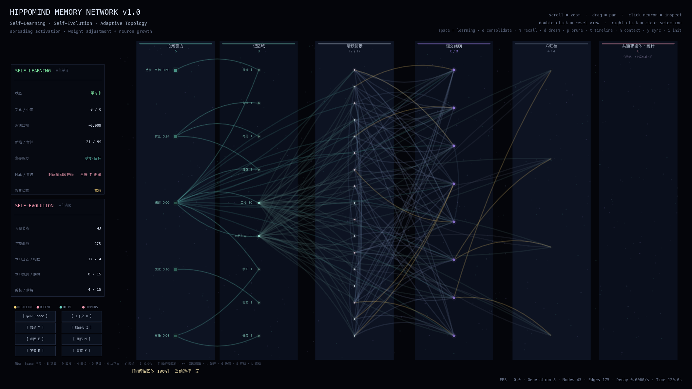

换班即归零
同一个仓库，Claude 记得部署端口，Codex 不知道。每个 Agent 各有一本写不进去的日记，经验随会话结束蒸发。
三个真实的失效现场。它们都不缺「存储」，缺的是「在该想起的时候，想起对的那一条」。
同一个仓库，Claude 记得部署端口，Codex 不知道。每个 Agent 各有一本写不进去的日记，经验随会话结束蒸发。
把三个月的历史一股脑塞进 prompt：token 花在重复上，真正的结论被埋在四百行日志里，模型照样错过。
两条互相矛盾的结论同时躺在记录里；半年后没人说得清哪条先成立、被谁推翻、当时依据什么。
「存下来」早就不是难题。「取用」才是——HIPPOMIND / DESIGN PREMISE
而取用的前提，是先学会遗忘。
从你在编辑器里敲下第一行字，到一段带证据的记忆被塞进模型上下文，中间只有 200 毫秒——但要走完七道工序。每道工序都有明确的拒绝权。
daemon 每 60 秒增量读取 Claude Code、Codex、Gemini / Antigravity、Pi 的原生会话文件；DSH 由 Cordis 插件在会话结束时按 seq_span 写回。每个来源一条独立游标，只消费以换行结尾的完整行——写者写到一半，游标就不前进。
每 5 分钟取 16 条未提炼记忆：一半来自结构化投影，一半来自最新原始会话。本机 claude -p 抽出 subject / predicate / slot_key / value / confidence；解析失败回退确定性抽取，连续两次失败熔断 10 分钟，成功后立即复位。
作用域、项目、来源、生命周期、有效期先做硬过滤，把候选压到可控规模。然后 FTS5 trigram 与 LIKE 双通道召回，实体索引作为第三路信号，按相关、新鲜、重要、效用、触碰融合排序。
自动路径固定 min_score = 0.20，并且候选必须真有 FTS 命中，或查询覆盖率 ≥ 0.6。没有这道门，「最近发生过」的无关记忆会凭时间与触碰分混进来——这是记忆系统最典型的污染方式。
最多 8 项、6,000 token、16,000 字符。候选先按内容折叠，把同一句话的多次抓取压成一条；再用 MMR 排序，在相关性与多样性之间留出位置，而不是让同一结论占满整个包。
整包用动态 nonce 包裹、做 XML 实体转义，并明确标注为不可信参考数据。原始聊天默认不进包。每次注入只写一行 trace：agent、查询哈希、条目数、字符数——不存原文，但每一次都能复盘。
被召回只做小幅饱和升权：+0.018 × (1 − w)。真正的强化来自环境、用户或评测器的反馈；utility 与 weight 一起进入下一次排序。模型自己说「这次干得不错」不算证据。
它不是又一个向量库。整套系统只有四层，层与层之间靠一份不可变的事件账本连接——所以任何一层坏了，都能被重建，而不是被猜。
数据层不反向依赖演示模块：`import hippomind.ledger` 不会加载 matplotlib，边界由测试锁死。
升权很轻，遗忘很慢，而回忆不会让时间倒流。下面这条曲线不是示意——它就是账本里每天都在跑的公式。
参数取自 lifecycle.py 默认配置；到期先降为 cold，不立即删除。
v2 的核心不是多了一个功能，而是取消了「标记」这个动作。采集、提炼、门控、裁决、巩固，五道工序在后台自己转，留下可审计的痕迹。
六个来源各自增量读取；任何一路失败只写进 health，不阻塞其它来源。
16 条 / 轮，结构化与 raw 各半。幂等游标保证重复轮次不重复写。
分数门 + 词法证据门；无关请求直接跳过，并记录跳过原因。
领先 >0.05 直接裁决；模糊时 newest-wins；两条 ≥0.9 的强断言留人工。
深维护一轮：巩固 + raw 归档 + WAL 检查点。同一空闲期只跑一次。
{
"capture": { "files": 212, "inserted": 38, "errors": 0, "elapsed_ms": 184 },
"distill": { "candidates": 16, "claims": 21, "extractor": "claude",
"conflicts_resolved": 2 },
"injection":{ "injected": 6, "skipped": 11, "chars": 4821 },
"health": { "status": "READY", "dangling_claims": 0 }
}
不讲概念，直接摊开代码。七个功能区、三十多个模块，每个都有单一职责——这也是它能在 3.7 万行核心代码上维持 144 个测试文件的原因。
按来源维护增量游标；原生 Hook、Cordis 插件、MCP profile 与托管规则四种接入方式，全部走同一份清单声明。
双队列取样 → 抽 claim → 建因果边 → 幂等落账；脱敏与长度钳制在写入前完成，不把风险留到检索侧。
事件只追加、投影可重建；双时态事实、Slot-Value 冲突下线、衰减与冷归档、加密导出都在这一层。
FTS + LIKE + 实体三路候选，RRF 融合后按四维与 MMR 排序；时间短语自动转 from/to 过滤。
localhost HTTP + MCP stdio + 完整 CLI；token、scope、账本指纹三重校验，只读模式可整机降级。
门控预取、注入留痕、注入面审计与自愈。判据是「这条路径现在能不能读到生产账本」，不是「配置里有没有关键字」。
海马体算法本体、心潮驱力、网格世界实验场，以及零构建的 Atlas 控制台。演示模块与生产账本严格解耦。
你可以把它当成命令行工具、一个 MCP 服务器、一个本地 HTTP 服务，或者一个能翻账的控制台。写进去的东西，四个入口看到的是同一份。
# 初始化、启动、写入第一条带证据的记忆 $ hippomind init $ hippomind start $ hippomind ingest --agent me --evidence "docs/arch.md#L12" \ --content "支付服务部署在 us-west-2" # 按任务取最小上下文，再给真实结果打分 $ hippomind context "支付服务部署在哪" --max-items 4 $ hippomind feedback <memory_id> 1.0 # 只读体检：完整性 / FTS / 游标 / claim 一致性 $ hippomind checkup
# 一次写入所有已检测 Agent 的 MCP profile $ hippomind install-agents --auto $ hippomind agent-status # 编辑器重启后，Agent 可直接调用： hippomind_context_pack 按任务取最小上下文 hippomind_recall 关键词检索 hippomind_ingest 写入带证据的事实 hippomind_feedback 验证结果升降权 hippomind_conflicts 冲突谱系 hippomind_graph 实体图谱 … stats / injection / sync / pin / forget
# 存活与账本指纹（防止拿 A 库 token 操作 B 库） $ curl -s localhost:8765/health # 管理员令牌走请求头，不进 URL、不进日志 $ curl -s -H "X-HippoMind-Token: $TOKEN" \ localhost:8765/stats $ curl -s -X POST localhost:8765/context-pack \ -H "Content-Type: application/json" \ -d '{"query":"数据库端口","max_items":4}' # Prometheus 文本指标 $ curl -s localhost:8765/metrics

它不是「更长的系统提示词」。下面六件事，是这套系统真正被用到的时刻。
Claude 里定的方案，Codex 一开口就能查到。记忆属于账本，不属于某个客户端。
每条事实都带 source / scope / 有效期 / 替代关系。过期或被替代的证据不参与召回，而不是靠模型自觉。
同一个槽位出现互斥取值时自动下线败者，保留谱系。分数接近且都是强断言，就停下来等人裁决。
双时态让每条 claim 同时拥有「何时为真」与「何时被记录」。历史切片能回答过去，而不是把旧结论混进现在。
单文件 SQLite，零外呼。需要只读镜像时，--read-only 让整台机器在物理上不可能误写主库。
导出只带结构化事件：raw 聊天、游标、token、凭据、daemon 状态一律排除。导入幂等去重，重导零重复。
记忆系统最危险的地方，是它看起来什么都记得。所以这里写两件事：默认挡住了什么，以及哪些地方仍然挡不住。
只绑回环地址；token 文件 0600；token 绑定账本指纹，换库即失效。
scope 隔离；只采 user / assistant；raw 默认不进活跃池、不进上下文包。
动态 nonce 包裹、XML 转义、整包标注为不可信参考数据。
事件溯源可重建投影；软遗忘保留审计；备份带 sha256 校验。
所有数字都来自生产账本快照或仓库内可复现的评测脚本。日期不同，所以分开标注——不把不同时间的指标拼成一个漂亮的总分。
不需要注册、不需要 API Key、不需要把数据发出去。Python 3.9+ 就能跑；旧版 matplotlib 界面才需要额外依赖。
幂等。已存在就复用，不会覆盖你的记忆。
默认 127.0.0.1:8765，自动带采集与提炼循环。
自动发现 → 只对已检测的运行时安装 → 握手验证。
体检 + 状态 + 一次真实召回，确认链路通。
PYTHON ≥ 3.9 · macOS / LINUX / WINDOWS · 零第三方运行时依赖 · MIT
# 1. 初始化（幂等） $ python3 -m hippomind init # 2. 启动或复用本机 daemon $ python3 -m hippomind start # 3. 接入已检测到的 Agent（未知运行时只报告） $ python3 -m hippomind install-agents --auto # 4. 验证：体检 + 打开控制台 $ python3 -m hippomind checkup $ open http://127.0.0.1:8765/ui # macOS 也可双击 start-hippomind.command # 或 ./start-hippomind.command --web
升级代码后重跑一次 scripts/install-autostart.sh：它会把包同步到内置盘 runtime，并校准所有 Agent 的注入面。
从「标记驱动的归档」到「装完就忘的闭环」，中间隔了三次重构和一次数据治理。
SQLite/WAL 事件账本成为事实来源；daemon 提供 CLI、localhost HTTP 与 MCP stdio；watcher 低频采集归档。
FTS 与 LIKE 双通道 RRF 融合、实体扩展、近似重复硬剔除、PACMS 覆盖度奖励、时间短语解析、空闲睡眠巩固。
稳定身份键止住重复入库；保留期真正删除（gzip → fsync → 回读校验 → 分批删）；4.48 GB 压到 406.8 MB；ledger 与 cli 拆成 mixin 包。
零构建的 Web 控制台：纸本档案馆视觉、11 个视图、⌘K 命令面板；数据面 /api/v1 只读有界。
取消标记：60 秒采集、5 分钟提炼、相关性门控注入、冲突自动裁决，全链路留痕可审计。
悬空 claim 1,671 → 0；双时态历史回填；拒答测试扩到 38 条并进门禁，leak 恒为 0；实体成为第三路检索信号。